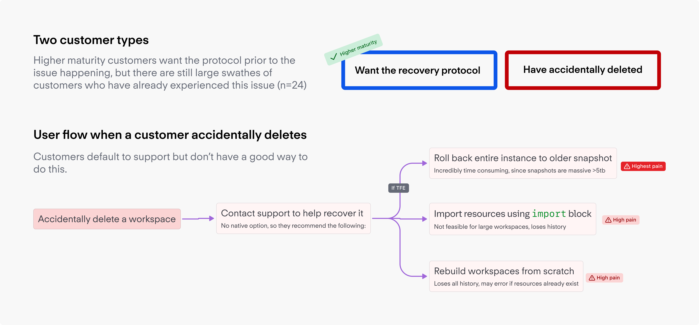
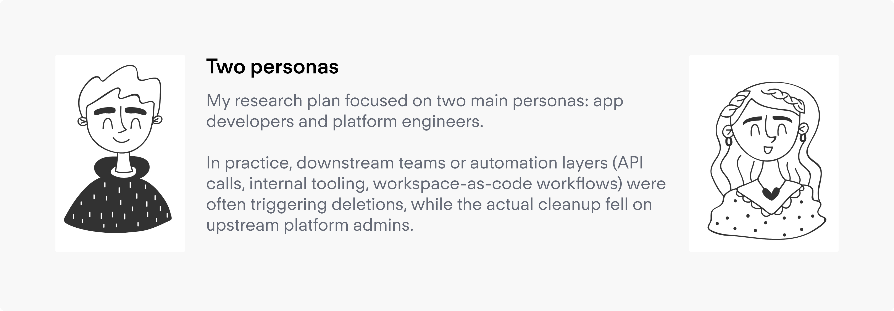
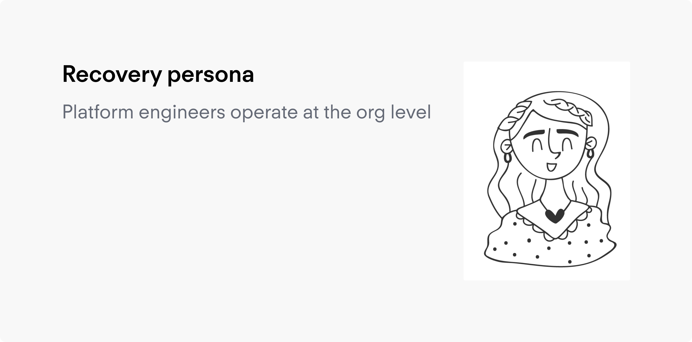

Ishaan Bose
Ishaan Bose
Enter the password to access

In HCP Terraform, a workspace is not just a project container. It holds the state, variables, history, and workflow context needed to manage real infrastructure over time. Deletion could wipe all of that, with no native path to get it back.

One internal support note cited Epic Games, where recovering nine deleted workspaces was estimated at three to five days per workspace. That made it clear that this was significant pain when it does occur.

That mismatch shaped the whole problem. Recovery had to fit the reality of enterprise operations, not just the UI. I partnered with my PM to frame the work around three questions: how accidental deletion actually happened, what a believable recovery path should bring back, and how customers were already trying to protect themselves from this risk.
We ran customer interviews and contextual inquiry, then pulled findings into a tighter MVP definition. My role was not just to design a flow. I was helping the team decide what problem we were actually solving, who the feature was really for in the moment of failure, and where to stop before "workspace recovery" quietly turned into a much larger disaster-recovery or archival project.
State recovery was essential
The state file was what customers actually cared about. Manual re-import was the real pain, especially at scale with 1,000+ resources.
Two different mindsets
Some had already been burned. Others were protecting against something they hoped would never happen. I was designing for both.
Existing guardrails weren't enough
Git approvals, Sentinel, and internal controls still left gaps, especially in automation and API-driven flows where no confirmation UI could intervene.

The temptation early on was better deletion prevention. But most accidental deletions came through code and API flows — no confirmation UI could catch those. Recovery had to be its own capability. Customers pushed for configurable retention, rollback, and audit history; all of it got scoped out. That restraint is what kept the project from dissolving into a platform effort. The metric analysis below was a key input in making those calls.

Challenge: A one-click restore sounds fast, but silent restoration could easily hide drift — a workspace that looked recovered but no longer matched its config or state expectations.
Decision: Research pointed toward accepting friction. Accidental deletion was rare, so the cost of an extra step was low. The cost of getting the restore wrong was not..


Challenge: Recovery could logically live at workspace, project, or organization level. Duplicating it across views would create inconsistency and fragment the experience.
Decision: Because the operational owner was almost always a platform engineer or org admin, I scoped the entry point to organization-level access only, which matched the actual recovery actor.

Challenge: Naming it "Workspace Recovery" would lock the feature to a single object type, requiring a second IA change when stacks and other resources needed the same capability.
Decision: Renamed to Recoverable Items, which is extensible to stacks and other object types without forcing a future rebrand or IA disruption.


Challenge: Customers asked for configurable retention. Short windows felt unsafe; long ones risked becoming a de facto archival system.
Decision: Research pointed to 30 days — long enough for real incidents, short enough to avoid archival debt. We fixed it rather than making it a setting.

Challenge: If a deleted workspace's name gets reused before recovery, the two objects conflict — something has to be blocked.
Decision: We blocked recovery rather than creation. Collisions are rare, and halting active work to protect a deleted workspace is the wrong tradeoff.

By the end of the project, the team had aligned on an in-product recovery concept scoped around accidentally deleted workspaces and stacks, organization-level access, a 30-day retention window, and a recovery run that restores the workspace "as if it were never deleted."
The design work also clarified what was explicitly out of scope: full audit history, unlimited retention, n-2 rollback, and a generic archival system. An internal demo described the feature as a gamechanger for customers, and the design work formed the basis for that impact.
Trust built into the product
Users expect the tool that they pay $XXXk or $XXXXk to fix their issues if they make a mistake.
$77M in contract value
Directly impacts business revenue by delivering a highly impactful feature.
Enterprise ready product
Creates a resilient selling narrative for our target customers, the top 2000 orgs in the world.
The hard part of this project was not drawing an "undelete" flow. It was understanding the system around the failure: who caused it, who owned the recovery, what data actually mattered, and where a tightly scoped fix could accidentally become a much larger platform promise.
By keeping the work focused on high-confidence recovery instead of generalized rollback or archival, I helped the team move from reacting to a feature request to defining something more coherent and buildable. The project also reinforced something I come back to often: in enterprise software, the real user of a recovery feature is usually not the person who made the mistake.